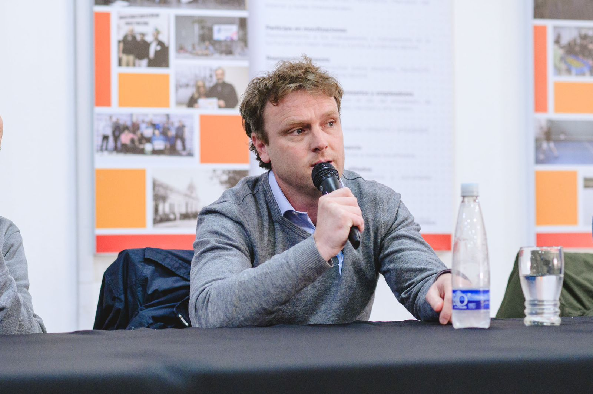

El concejal Maximiliano Wesner (precandidato a intendente por el Frente de Todos) hizo un análisis de los números
conocidos recientemente del CENSO 2022 y sostuvo la necesidad de una mayor inversión municipal en
infraestructura y el desarrollo de soluciones habitacionales.
Un nuevo informe del INDEC con base en los resultados provisionales del Censo 2022 arroja los datos
habitacionales más importantes del país. Olavarría aparece por debajo de la media provincial en el ítem de
población con vivienda propia.
Según los nuevos datos difundidos por el INDEC, el 63,8% de las familias olavarrienses residen en viviendas
propias, lo que implica un descenso importante con respecto al año 2015 donde el 70,40% eran dueños de sus
hogares, llegando a un acumulado negativo de -6,60% en 7 años.
El índice actual se encuentra por debajo de la media provincial y también con respecto a otras ciudades de la
zona. Entre los 135 municipios bonaerenses, Olavarría ocupa el puesto 116° en materia de vivienda propia.
Sobre estos datos, Wesner expresó: "La situación a lo largo de estos últimos 7 años se vio agravada por la falta
de inversión municipal, no podemos dejar de destacar que gran parte de las obras públicas se han realizado con
fondos provenientes de Nación o Provincia. ", y agregó: "Con decisión política e inversión se pueden revertir
estas cifras".

Como ejemplos, Wesner destacó: "La construcción de 100 viviendas a través de un convenio con el sindicato del
Centro Empleados de Comercio Olavarría y el Instituto de la Vivienda de la Provincia de Buenos Aires y 60
viviendas del barrio Minero por medio del Sindicato de AOMA que ya están escrituradas, de las cuales 52 se
hicieron con créditos Procrear”.
"Con un acompañamiento del estado municipal teniendo en cuenta el crecimiento demográfico y una buena política
pública de acceso a la vivienda, hoy Olavarría debería mostrar otros porcentajes, tal vez más cercanos al 70-75%
como en algún momento supo tener. El único programa hasta el momento desarrollado por el gobierno actual es el
Plan TUVI que tuvo grandes falencias que ya conocemos", remarcó Wesner.
Y aseguró que "un rendimiento similar se produce al observar la evolución de la extensión de la red cloacal;
según los datos del INDEC cruzados con los arrojados por la plataforma Gobierno Abierto del municipio, arrojan
que la caída más pronunciada a partir del año 2015. El Censo 2022 muestra que el 51,7% de los hogares de
Olavarría cuenta con cloacas mientras que en 2015 esta cifra era del 58,8%".